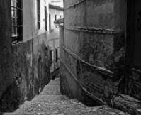

Cocula, uno gran pueblo lleno de cultura y muchos lugares incresibles de ver
Estos son algunos de los lugares mas representativos de cocula
tambien hay muhas leyendas urbanas de este gran y bonito pueblo, una de ellas es la del callejon del diablo la cual es muy conosida
